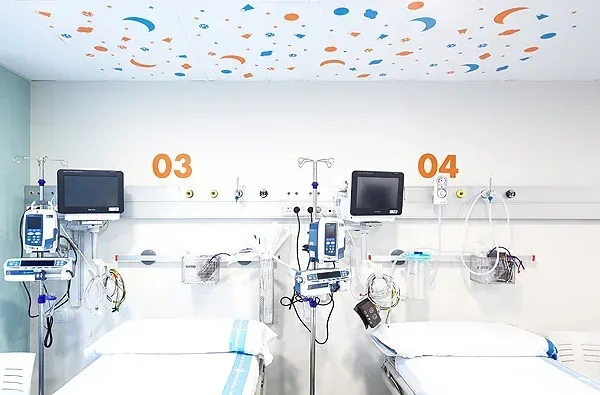
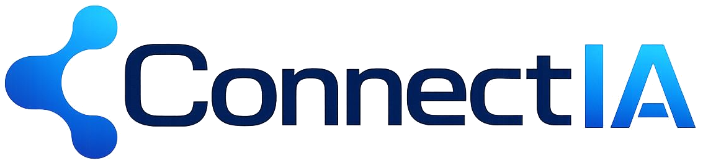
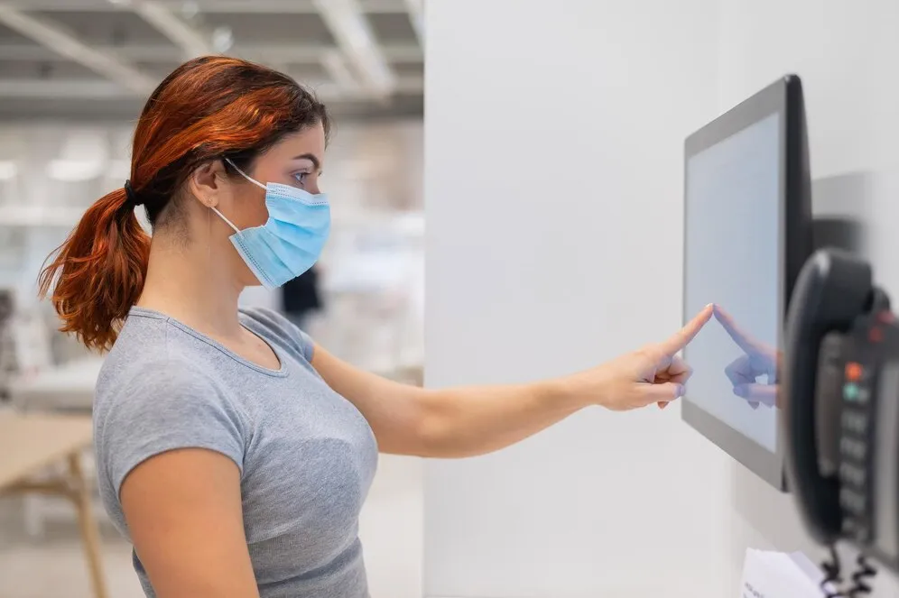
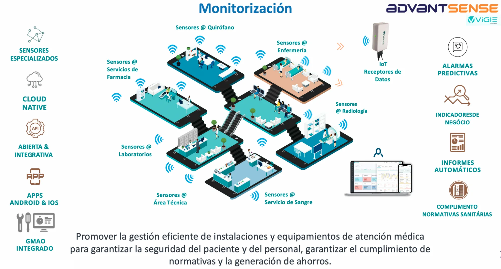
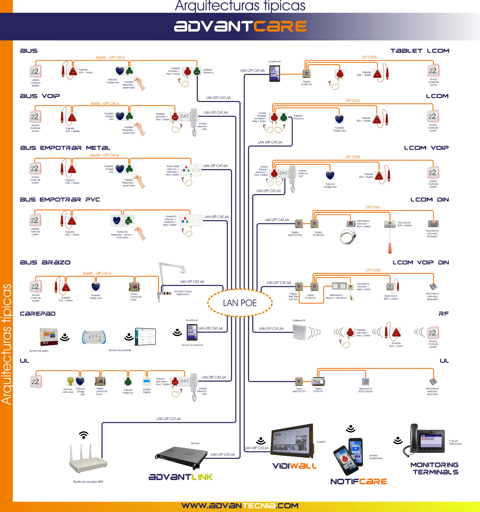

{{ pr.t }}
{{ pr.tag }}{{ pr.d }}
hospitales
habitaciones digitalizadas
años
usuarios al año
Un hospital que cuida mejor, destaca. Gana la confianza de sus pacientes, retiene a su equipo y se convierte en referencia. Por eso llevamos más de 20 años poniendo la tecnología al servicio de las personas, y no al revés.
Tu tecnología no debería notarse en los cables. Debería notarse en las personas.

Inteligencia artificial propia
Connect.IA es la inteligencia artificial desarrollada por Advantecnia. Está detrás de todo el ecosistema SmartHospital y hace que cada sistema funcione según los parámetros de excelencia que exige el sector salud.
Las cuatro familias son sus sentidos y sus manos: captan lo que ocurre en cada habitación y cada área, y actúan donde hace falta. El Servidor MQTT recoge los datos de todos los sistemas y Connect.IA decide qué hacer con ellos. NurIA sigue atendiendo al paciente.
Paciente
SmartRoom
Monitorización
SmartSense

Orquesta
Operación
SmartFlow
Plataforma
SmartCore
Escucha
Recoge en tiempo real las señales de habitaciones, sensores, dispositivos y sistemas.
Entiende
Interpreta cada evento con el contexto del paciente y los protocolos del centro.
Actúa
Prioriza, escala y lleva cada aviso a la persona adecuada, en el momento adecuado.
Mejora
Mide cada respuesta y convierte los datos en decisiones para dirigir con criterio.
Nos integramos con los sistemas que ya tienes. Evolucionas sin tirar tu inversión ni parar el hospital.
Seguridad real sin cámaras ni grabaciones. Proteges al paciente respetando su intimidad.
Nuestra inteligencia artificial propia coordina todo el ecosistema y libera a tu equipo para lo que de verdad importa.
El ecosistema SmartHospital
SmartHospital es la forma Advantecnia de llevar tu hospital al siguiente nivel: un único ecosistema, gobernado por Connect.IA, que conecta personas, espacios, alarmas, dispositivos y servicios. Empieza en una habitación y se extiende a todo el centro, sin cambiar lo que ya funciona.
Creemos que un hospital se mide por cómo cuida. Por eso no vendemos aparatos sueltos: construimos un ecosistema donde todo habla el mismo idioma y trabaja para lo único que importa: las personas. Una sola arquitectura, múltiples áreas, un Smart Hospital.
Paciente
La habitación que cuida. Comunicación, experiencia y acompañamiento del paciente.
DescúbreloMonitorización
Cuidar sin vigilar. Monitorización sin cámaras y sin contacto.
DescúbreloOperación
Todo el hospital en sintonía. Operación, seguridad y gestión de todas las áreas.
DescúbreloPlataforma
El cerebro y la red. La plataforma que integra todo y la red que lo sostiene.
DescúbreloGrandes hospitales confían en Advantecnia para cuidar mejor.
Un asesor experto analiza tu hospital y te muestra qué soluciones pueden llevarlo al siguiente nivel, con prioridades claras y sin compromiso.
Te respondemos en menos de 24 h laborables. Sin compromiso.
Te respondemos en menos de 24 h laborables para agendar tu conversación con un asesor experto.
{{ auditErr }}
Advantecnia pertenece a ACE Business Group (ACE BG), grupo empresarial multidisciplinar con amplia experiencia en los sistemas para hospitales para edificaciones e infraestructuras especializadas, donde el componente tecnológico es fundamental.
Advantecnia es la división especializada en comunicación asistencial, automatización y seguridad, y gestión y entretenimiento.

Estamos especializados en servicios de consultoría, instalación, sistemas para hospitales distribución de equipamiento médico y fabricación de tecnología.
Conoce todos nuestros servicios y contacta con nosotros para personalizar tu solución.
Misión
Apoyar al cliente en todo el proceso de equipamiento e infraestructura de hospitales, centros socio-sanitarios, colegios y empresas privadas, entre otros.
Visión
Ser una empresa reconocida a nivel internacional, partiendo de la calidad e innovación en lo que hacemos.
Valores
Proveemos soluciones para los sectores:
Tenemos la capacidad de proveer soluciones en diferentes países para la ejecución de obras e instalaciones. Así mismo trabajamos de la mano con nuestros distribuidores brindándoles apoyo técnico, logístico y comercial en diferentes países. Actualmente poseemos oficinas técnicas y comerciales en Europa, Norte América (USA), Asia, África y en gran parte de Latinoamérica.
{{ s.name }}
{{ s.sub }}
El objetivo
{{ s.obj }}
Cómo lo hacemos
{{ hw.t }}
Qué hace Connect.IA aquí
{{ ip.t }}
{{ s.name }} · Productos
{{ pr.d }}
{{ s.note }}
{{ s.legal }}
{{ s.name }}
{{ item.t }}
{{ item.d }}
{{ s.legal }}
{{ s.starEyebrow }}
{{ s.starTag }}
{{ s.starBody }}
AdvantSense en el hospital

Pulsa sobre el esquema para verlo a tamaño completo.
AdvantCare

Pulsa sobre el esquema para verlo a tamaño completo.


Dónde se aplica
Cómo trabajamos contigo
Una arquitectura modular te permite transformar el centro paso a paso, con Connect.IA dando una visión global desde el principio.
{{ f.t }}
{{ f.d }}
Un asesor experto analiza tu hospital y te muestra qué familia (SmartRoom, SmartSense, SmartFlow o SmartCore) puede llevarlo al siguiente nivel, con prioridades claras y sin compromiso.
Resultados reales, en centros reales. Esto es lo que pasa cuando la tecnología se pone al servicio de las personas.
{{ fichaLugar }}
[dato a validar] Punto de partida del centro y necesidad que trajo a Advantecnia al proyecto.
[dato a validar] Soluciones desplegadas, alcance en habitaciones o plantas, y sistemas con los que se integró.
Habitaciones
Avisos gestionados
Sistemas integrados
“[cita del cliente a validar]”
Información legal
En cumplimiento del artículo 10 de la Ley 34/2002, de 11 de julio, de Servicios de la Sociedad de la Información y del Comercio Electrónico (LSSICE), ACE BUSINESS GROUP INTERNATIONAL SA (en adelante, “ACEBG”), Responsable de esta web, pone a disposición de los Usuarios la presente información, para definir sus Condiciones de Uso.
Adicionalmente a los contenidos aquí expuestos, los aspectos específicos relacionados con la protección de los datos personales y la privacidad de los usuarios de esta web se desarrollan en las páginas de Política de Privacidad y Política de Cookies.
Identidad del Responsable del Tratamiento
La web de “ACEBG” tiene la finalidad de informar a clientes y potenciales clientes de sus productos y/o servicios, datos de contacto, ubicación, etc. Además, en su caso, también tendrá la finalidad de divulgar información relacionada con el sector de actividad del Responsable.
La actividad de esta web se encuentra sujeta al marco legal español y europeo, concretamente a las siguientes normas:
Toda persona que acceda a este sitio web asume el papel de Usuario, comprometiéndose a la observancia y cumplimiento riguroso de las condiciones aquí dispuestas, así como a cualquiera otra disposición legal que fuera de aplicación. “ACEBG” no se hará responsable de los daños y perjuicios, propios o a terceros, producidos por el uso inadecuado de este sitio web por parte del Usuario.
El contenido de esta web, por tanto, no puede ser considerado, en ningún caso, sustitutivo de asesoramiento legal.
“ACEBG” se reserva el derecho a modificar cualquier tipo de información que pudiera aparecer en la web, en cualquier momento y sin previo aviso, sin que exista obligación de preavisar o poner en conocimiento de los Usuarios dichas obligaciones, entendiéndose como suficiente la publicación en el presente sitio web.
Este sitio web ha sido revisado y probado para que funcione correctamente de manera ininterrumpida. No obstante, “ACEBG” no descarta la posibilidad de que existan ciertos errores de programación, falta de disponibilidad puntual (por ejemplo, caídas del servidor, o mantenimiento del mismo) o que acontezcan causas de fuerza mayor, catástrofes naturales, huelgas, o circunstancias semejantes que hagan imposible el acceso temporal a la página web. De igual forma, “ACEBG” no puede garantizar el funcionamiento ininterrumpido o totalmente libre de errores de esta web, ni se responsabiliza de los virus que tengan su origen en una transmisión telemática infiltrados por terceros generados con la finalidad de obtener resultados negativos para un sistema informático.
El Usuario se compromete a no utilizar esta web ni, si es el caso, los servicios o productos ofrecidos en la misma, para la realización de actividades contrarias a la ley, al orden público o a estas condiciones de uso. Por tanto, “ACEBG” no se hace responsable de la información y contenidos almacenados, a título enunciativo, pero no limitativo, en foros, chat´s, generadores de blogs, comentarios, redes sociales o cualquier otro medio que permita a terceros publicar contenidos. No obstante, y en cumplimiento de lo dispuesto en el art. 11 y 16 de la LSSI-CE, “ACEBG” se pone a disposición de todos los Usuarios, autoridades y fuerzas de seguridad, colaborando de forma activa en la retirada o en su caso bloqueo de todos aquellos contenidos que pudieran afectar o contravenir la legislación nacional, o internacional, derechos de terceros, o la moral y el orden público. En caso de que un Usuario considere que existe en la web algún contenido que pudiera ser susceptible de esta clasificación, se ruega lo notifique de forma inmediata a nuestro personal.
“ACEBG” se reserva el derecho a denegar o retirar el acceso a la web sin necesidad de advertencia previa, a instancia propia o de un tercero, a aquellos Usuarios que incumplan nuestras Condiciones de Uso.
El sitio web, incluyendo a título enunciativo, pero no limitativo su programación, edición, compilación y demás elementos necesarios para su funcionamiento, los diseños, logotipos, texto y/o gráficos son propiedad de “ACEBG” o, en su caso, dispone de licencia o autorización expresa por parte de los autores.
Todos los contenidos del sitio web se encuentran debidamente protegidos por la normativa de propiedad intelectual e industrial, así como inscritos en los registros públicos correspondientes, y no se permite la reproducción y/o publicación, total o parcial, del sitio web, ni su tratamiento informático, su distribución, difusión, modificación o transformación, sin el permiso previo y por escrito del mismo. “ACEBG” velará por el cumplimiento de las anteriores condiciones, así como por la debida utilización de los contenidos presentados en sus páginas web, ejercitando todas las acciones civiles y penales que le correspondan en el caso de infracción o incumplimiento de estos derechos por parte del Usuario.
Los diseños, logotipos, texto y/o gráficos ajenos a “ACEBG” y que pudieran aparecer en el sitio web, pertenecen a sus respectivos propietarios, siendo ellos mismos responsables de cualquier posible controversia que pudiera suscitarse respecto a los mismos. En todo caso, “ACEBG” cuenta con la autorización expresa y previa por parte de los mismos. “ACEBG” reconoce a favor de sus titulares los correspondientes derechos de propiedad industrial e intelectual, no implicando su sola mención o aparición en el sitio web la existencia de derechos o responsabilidad alguna del Responsable sobre los mismos, como tampoco respaldo, patrocinio o recomendación por parte del mismo.
“ACEBG” puede poner a disposición del Usuario enlaces u otros elementos que permiten el acceso hacia otros sitios web pertenecientes a terceros. No comercializamos los productos y/o servicios de dichas páginas enlazadas, ni asumimos ningún tipo de responsabilidad sobre las mismas, ni sobre la información contenida en ellas, ni su veracidad o licitud, ni de cualesquiera efectos que pudieran derivarse.
En todo caso, “ACEBG” manifiesta que procederá a la retirada inmediata de cualquier contenido que pudiera contravenir la legislación nacional o internacional, la moral o el orden público, procediendo a la retirada inmediata de la redirección a dicho sitio web, poniendo en conocimiento de las autoridades competentes el contenido en cuestión.
El idioma de redacción e interpretación de este aviso legal es el español.
La relación entre “ACEBG” y Usuario se rige en todos y cada uno de sus extremos por la ley española, a la que se someten expresamente ambas partes ante cualquier controversia o cuestión relacionada con el presente sitio web o las actividades en él desarrolladas.
Por su parte, en el caso de que el usuario tenga su domicilio fuera de España, “ACEBG” y Usuario se someten, con renuncia expresa a cualquier otro fuero, a los Juzgados y Tribunales competentes de España.
Advantecnia es una marca Registrada de ACE BUSINESS GROUP por tanto aplica la política de privacidad de la empresa. ACE BUSINESS GROUP respeta su privacidad y se compromete a proteger la información personal que Usted nos proporcione. Nos gustaría compartir con Usted los siguientes principios que rigen nuestra política de privacidad. Esta Política de Privacidad puede cambiar con el tiempo o ser actualizada por lo que le recomendamos y enfatizamos revisar continuamente esta página para asegurarse que está de acuerdo con dichos cambios. ACE BUSINESS GROUP garantiza el cumplimiento de la normativa vigente en materia de protección de datos personales, reflejada en la Ley Orgánica 15/1999 de 13 de diciembre, de Protección de Datos de Carácter Personal y en el Real Decreto 1720/2007, de 21 diciembre, por el que se aprueba el Reglamento de Desarrollo de la LOPD. El uso de esta web implica la aceptación de esta política de privacidad.
A lo largo de la presente Política, nos referimos a información que le identifica a Usted personalmente, como “Información Personal” o “Información Personal Sensible”. ACE BUSINESS GROUP recoge su Información Personal o Información Personal Sensible para poder responder a sus solicitudes, que podrán incluir, por ejemplo, procesar sus pedidos, incluirle en una lista de correos electrónicos, o registrarle para eventos. Información Personal es cualquier información que pueda identificarlo como un individuo, tal como su nombre, dirección postal o de correo electrónico, número de teléfono, ocupación, o intereses personales. Si Usted nos proporciona Información Personal sobre una persona distinta a Usted, como su cónyuge o un compañero de trabajo, Usted deberá contar con la autorización de dicha persona para proporcionarnos sus datos.
En muchos casos, Usted podrá navegar por el sitio web de ACE BUSINESS GROUP. Cuando Usted accede al sitio web de ACE BUSINESS GROUP, grabamos su dirección IP (la dirección de Internet de su ordenador), para que nos dé una idea de qué partes del sitio web visita y cuánto tiempo pasa en cada sección. No unimos su dirección IP a ninguna Información Personal suya, salvo que Usted se haya registrado con nosotros y haya entrado al sistema utilizando su perfil. El acceso a ciertas páginas web, servicios, productos y actividades de ACE BUSINESS GROUP requieren un nombre de usuario y contraseña. Es su responsabilidad mantener la confidencialidad de su nombre de usuario y contraseña. Usted podrá elegir proporcionarnos Información Personal en una variedad de casos, incluyendo cuando Usted:
ACE BUSINESS GROUP únicamente utiliza esta información si ha sido recabada conforme a lo establecido en la presente Declaración de Privacidad. Siempre le avisaremos antes de recoger cualquier Información Personal y le informaremos acerca del propósito de dicha recogida. Le pediremos su consentimiento antes de utilizar o comunicar sus datos para cualquier finalidad distinta a aquella para la cual Usted proporcionó sus datos. Con el objeto de conocer sus preferencias, necesitamos una acción por su parte, como que marque la opción apropiada para proporcionar su consentimiento.
Como muchos otros sitios web, ACE BUSINESS GROUP utiliza ciertas tecnologías, tales como cookies y web beacons, que nos permiten hacer su visita a nuestro sitio más fácil, más eficiente y más valiosa, proporcionándole un servicio personalizado y reconociéndole cuando Usted vuelva a nuestro sitio. Una “cookie” es un pequeño archivo de información enviado por un sitio web al disco duro de su ordenador. El sitio web de ACE BUSINESS GROUP envía cookies cuando Usted nos visita, efectúa compras, solicita o personaliza información o se registra para ciertos servicios. Una cookie no puede leer datos personales de su disco duro o leer archivos de cookies creados por otros sitios web; de hecho, la única información personal que puede contener una cookie es información proporcionada por Usted. La aceptación de las cookies utilizadas por nuestro sitio web podrá darnos acceso a información sobre su comportamiento de navegación, que podremos utilizar para personalizar nuestro servicio y rastrear patrones de tráfico de usuarios. Hacemos esto con el objeto de determinar la utilidad para nuestros usuarios de la información de nuestro sitio web y para saber cuán efectiva es nuestra estructura de navegación al ayudar a nuestros usuarios a encontrar dicha información. Las cookies normalmente se clasifican en “temporales” y “permanentes”.
Usted podrá navegar por gran parte del sitio web de ACE BUSINESS GROUP sin la necesidad de aceptar cookies de ACE BUSINESS GROUP. Sin embargo, si Usted desactiva las cookies de su ordenador algunas funciones del sitio web podrán perderse. Otras páginas web de ACE BUSINESS GROUP, especialmente aquellas que requieren un nombre de usuario y contraseña, requieren cookies y no podrán ser utilizadas si Usted desactiva las cookies de su navegador. ACE BUSINESS GROUP podrá personalizar links u otras tecnologías similares para rastrear links de correos electrónicos a los que Usted accede. Podremos asociar dicha información a su Información Personal, con el objeto de proporcionarle comunicaciones por correo electrónico o información de compra más enfocada. Cada comunicación por correo electrónico incluye un link para darse de baja, que le permitirá abandonar dicho tipo de comunicaciones. Si Usted prefiere no recibir cookies mientras navega por nuestro sitio web o a través de correos electrónicos compatibles con archivos HTML, podrá configurar su navegador para que le advierta antes de aceptar una cookie o para rechazar la cookie cuando su navegador le advierta de su presencia. Usted también podrá rechazar todas las cookies, desactivándolas en su navegador. Para más información sobre cookies y otras tecnologías de rastreo, incluyendo instrucciones para bloquear su utilización, vea http://privacy.getnetwise.org//browsing/tools.
ACE BUSINESS GROUP utiliza su Información Personal para responder a sus solicitudes y, para hacerlo, podría ser necesario que compartamos su información con terceros. En dichos casos, comunicaremos solamente aquella información necesaria para procesar su solicitud y obligaremos a dichos terceros a que limiten el uso de su Información Personal a la satisfacción de su solicitud. Asimismo, podremos utilizar su Información Personal para ponernos en contacto con Usted, en el marco de nuestras encuestas de satisfacción del cliente o con finalidades de investigación de mercado, siempre con su consentimiento. Utilizaremos su Información Personal para proporcionarle los productos y servicios que Usted haya solicitado, para responder a su llamada, y para proporcionarle material comercial que Usted haya solicitado. Los terceros con los que podremos necesitar compartir sus datos, incluyen a nuestros socios comerciales (por ejemplo, como parte de una promoción de venta conjunta o para remitir a uno de nuestros socios de distribución un contacto para una potencial venta); distribuidores de servicio; compañías de transporte; y autoridades gubernamentales (tales como la Aduana). En el caso de que su empleador tenga un acuerdo por escrito con ACE BUSINESS GROUP que rija el acceso a la información o programas de ACE BUSINESS GROUP, ACE BUSINESS GROUP podrá utilizar su Información Personal para verificar el cumplimiento con el acuerdo, acceder a las licencias de software otorgadas, rastrear software descargados de dichas páginas, o rastrear el uso de otras aplicaciones disponibles en dichas páginas. Asimismo, podremos utilizar su Información Personal para crear archivos de datos anónimos o conjuntos de datos, para realizar análisis estadísticos y para otros fines, omitiendo o suprimiendo información (tal como su nombre) a través de la cual se le pueda identificar. También comunicaremos su Información Personal, cuando dicha cesión sea exigida por una ley, con el objeto de hacer cumplir nuestros Términos de Uso, o en caso de urgencia, para proteger su seguridad personal, al público o a nuestra página web. La Información Personal Sensible que Usted nos proporcione solamente será utilizada para implementar la actividad o evento específico para el cual fue suministrada y luego será destruida.
ACE BUSINESS GROUP garantiza la seguridad de los datos que Usted nos proporcione a través de procedimientos físicos, electrónicos y de gestión estándar. Cuando corresponde, los sitios web de ACE BUSINESS GROUP, utilizan encriptación SSL para aumentar la seguridad de la transmisión de datos sensibles. Dentro de ACE BUSINESS GROUP, los datos son almacenados en servidores controlados con acceso limitado. Su información podrá ser almacenada y procesada en los Estados Unidos o cualquier otro país en donde ACE BUSINESS GROUP, sus afiliadas, filiales o agentes estén localizados. Si bien nos esforzamos para proteger su información personal, no podemos asegurar la seguridad de la información que Usted nos proporciona a través de una conexión de Internet no segura. Por este motivo, le rogamos que tome todas las medidas necesarias para proteger sus datos personales cuando Usted está en Internet. Algunas formas de proteger sus datos personales son cambiar sus contraseñas a menudo, utilizando una combinación de letras y números en las contraseñas, y asegurándose de que utiliza un navegador seguro. Asimismo, sea consiente de los ataques de “phising”, a través de los cuales se intenta robar datos personales del consumidor y sobre su cuenta bancaria. Los “phishers” utilizan correos electrónicos para llevar al consumidor a sitios web falsos, diseñados para engañar al destinatario y que éste proporcione información personal sensible, tal como el número de su tarjeta de crédito, el nombre de usuario de una cuenta, contraseñas y números de seguridad social. ACE BUSINESS GROUP nunca le enviará un correo electrónico, pidiéndole que proporcione o confirme Información Personal Sensible. Si Usted recibe una comunicación como las mencionadas, por favor reenvíela inmediatamente a info@acebusinessgroup.com y bórrela inmediatamente de su ordenador.
Nuestros sitios web no están dirigidos ni pretenden atraer a niños menores de 13 años. ACE BUSINESS GROUP no solicita, a sabiendas, información personal de niños menores de 13 años, ni les envía solicitudes de Información Personal.
El sitio web de ACE BUSINESS GROUP contiene links a sitios web de terceros. Sin embargo, dichos sitios web no son operados ni mantenidos por ACE BUSINESS GROUP, y ACE BUSINESS GROUP no comparte su Información Personal con dichos sitios web y no es responsable de sus políticas de privacidad. Su utilización de cualquier sitio web de un tercero será por su cuenta y riesgo. Si bien elegimos a nuestros socios comerciales con cuidado, ACE BUSINESS GROUP no se responsabiliza de las políticas de privacidad de los sitios web operados por terceros cuyo link aparece en nuestro sitio web. Una vez que Usted haya abandonado nuestro sitio web, Usted debería revisar la declaración de privacidad aplicable del sitio web del tercero, para determinar cómo van a utilizar cualquier información que recaben de Usted.
Los cambios realizados a las políticas de privacidad del website de ACE BUSINESS GROUP serán publicados en esta misma página indicando al final la última fecha de actualización. La utilización del sitio web de ACE BUSINESS GROUP después de cualquier cambio introducido, significará y confirmará que Usted consiente dichos cambios.
Si Usted tiene alguna pregunta o consulta acerca de la utilización de su Información Personal, por favor envíenos un e-mail a la siguiente dirección: info@acebusinessgroup.com.
La Ley Orgánica 15/1999, de 13 de diciembre, de Protección de Datos de Carácter Personal concede a los interesados la posibilidad de ejercer una serie de derechos relacionados con el tratamiento de sus datos personales. En cualquier momento usted puede restringir la recopilación o el uso de la información personal que es proporcionada a nuestro sitio web. Cada vez que se le solicite rellenar un formulario, como el de alta de usuario, puede marcar o desmarcar la opción de recibir información por correo electrónico. En caso de que haya marcado la opción de recibir nuestro boletín o publicidad usted puede cancelarla en cualquier momento. En tanto en cuanto los datos del usuario son objeto de tratamiento por parte de ACE BUSINESS GROUP Los usuarios podrán ejercer los derechos de acceso, rectificación, cancelación y oposición de acuerdo con lo previsto en la normativa legal vigente en materia de protección de datos personales. Para hacer uso del ejercicio de estos derechos, el usuario deberá dirigirse mediante comunicación escrita, aportando documentación que acredite su identidad (DNI o pasaporte), a la siguiente dirección: ACE BUSINESS GROUP INTERNATIONAL S.L. Calle: Colada de Pozuelo 20. Código postal: 28925. Ciudad: ALCORCÓN, Provincia: MADRID o la dirección que sea sustituida en el Registro General de Protección de Datos. Dicha comunicación deberá reflejar la siguiente información: Nombre y apellidos del usuario, la petición de solicitud, el domicilio y los datos acreditativos. El ejercicio de derechos deberá ser realizado por el propio usuario. No obstante, podrán ser ejecutados por una persona autorizada como representante legal del autorizado. En tal caso, se deberá aportar la documentación que acredite esta representación del interesado. Última Actualización 21 MAYO DE 2018.
Texto pendiente de volcar desde advantecnia.com/politica-de-cookies/.
Responsable: ACE BUSINESS GROUP INTERNATIONAL SA · NIF A83706721 · C/ Colada de Pozuelo 20, 28925 Alcorcón, Madrid · +34 637 49 57 57
Hola! Si quieres puedes hablarnos por aquí.
Please select a language